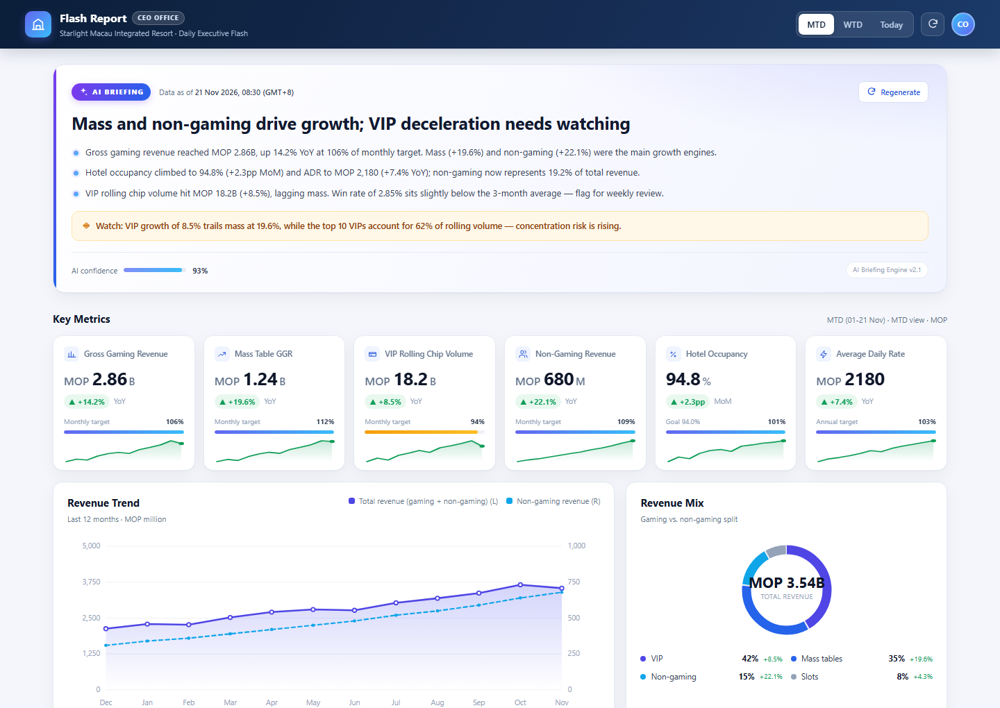

AI briefing
Auto-written headline, three bullet takeaways and a single “watch this” focus line — regenerable on demand.
A one-page, AI-enhanced daily briefing for a Macau integrated resort — built as a zero-dependency web app that drops straight into a Microsoft Teams tab.

Designed for the few minutes a CEO has between meetings.
Auto-written headline, three bullet takeaways and a single “watch this” focus line — regenerable on demand.
GGR, mass table GGR, VIP rolling volume, non-gaming revenue, hotel occupancy and ADR — with sparklines and target tracking.
Win-rate drift, VIP concentration and floor opportunities surfaced with confidence scores and recommended actions.
Natural-language Q&A over the report. Keyword adapter in the POC; swappable for an LLM / RAG backend.
// Replace these three functions for production
FlashData.fetchSnapshot() → warehouse / API
FlashData.buildBriefing() → LLM
FlashData.askAI() → LLM + RAGIt runs entirely in the browser. Ask it “Why did GGR grow?” or hit Regenerate.
If the embedded view is too narrow, open it full-screen ↗.